遊びで植物を育てよう
【新しい記事】
2021/06/26
アジサイの花柄を取りました。
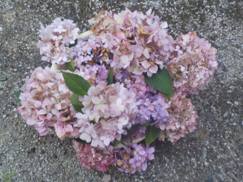
花が終わって茶色くなってきたものを摘み取りました。
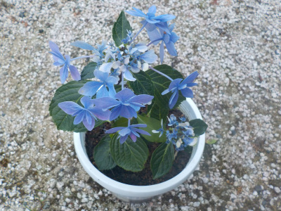
これは去年挿し木したアジサイです。
この種類は今頃が見頃です。アジサイは挿し木した翌年でも花が楽しめていいですね。
【アジサイTOP】 【木TOP】 【園芸TOP】
2021/05/23
アジサイに色がつきました。
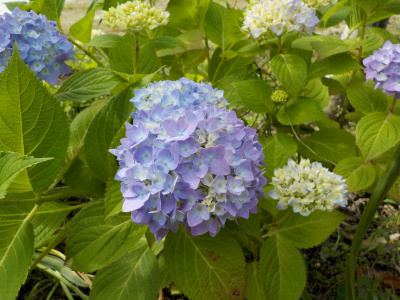
アジサイの霧島の恵みは色がついて綺麗になりました。
今年は梅雨入りが早く、雨がよく降っているので水やりが楽ちんです。
【アジサイTOP】 【木TOP】 【園芸TOP】
2021/04/24
アジサイの花の元が出来ました。
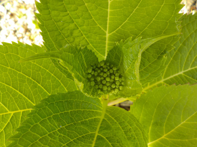
あちこちのアジサイに小さい花の元が出来だしました。
この調子だと色がつくのは一か月後くらいですね。
平年並みかな。
【アジサイTOP】 【木TOP】 【園芸TOP】
2021/02/13
軒下のアジサイに芽が出ました。
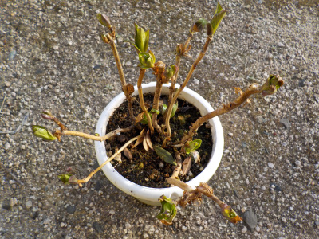
軒下だから早いのか、この品種（銀河）が早いのかはわかりませんが、芽があちこちから沢山出ました。
今年は大きくなりそうな感じがします。
植替えの準備が必要ですね。
【アジサイTOP】 【木TOP】 【園芸TOP】
2020/12/27
アジサイの土を入れ替えました。
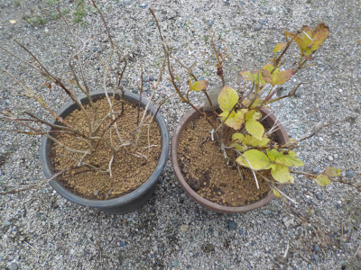
前回植替えしてから2年経ったので、土の入れ替えをしました。
アジサイの土にはビートモスを入れるってホームページがあったので、混ぜてみました。
どうなるでしょうね。
【アジサイTOP】 【木TOP】 【園芸TOP】
2020/06/07
アジサイの色が綺麗になってきました。
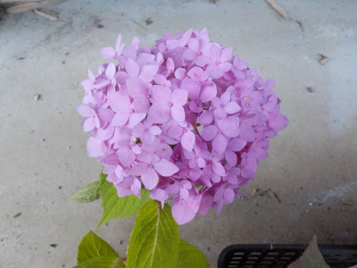
水耕栽培のアジサイが一番花が早かったです。
水耕栽培は水にいつも浸かっているので、成長が速いのかな。
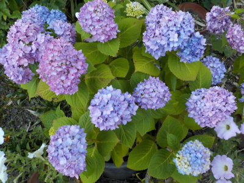
以前からある鉢植えは、これから大きくなる感じです。
【アジサイTOP】 【木TOP】 【園芸TOP】
2020/04/25
とっても早い時期にアジサイが咲いていました。
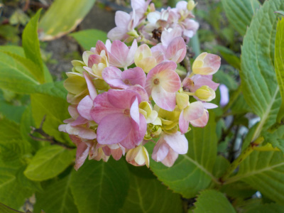
去年からあったツブツブが、年越しして花を咲かせました。
葉っぱはみんな落ちたのに、花は落ちずに開花するようです。
花は強いです。
【アジサイTOP】 【木TOP】 【園芸TOP】
2020/03/01
アジサイに小さなブツブツがいっぱいありました。
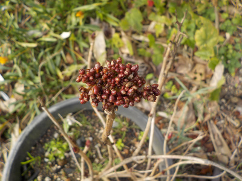
このブツブツは何かな？
花の元かな？冬に蕾が出来たけど咲けなくて、そのまま枯れてしまったのかな？
【アジサイTOP】 【木TOP】 【園芸TOP】
2019/12/22
アジサイをウールマットに植えました。

土なしでアジサイを育ててみようと思いました。
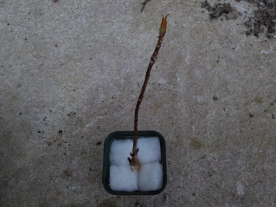
水槽のフィルターに使うウールマットに植えただけです。
水耕栽培で育つかどうか実験です。
【アジサイTOP】 【木TOP】 【園芸TOP】
2019/12/15
アジサイを地に植え替えしました。
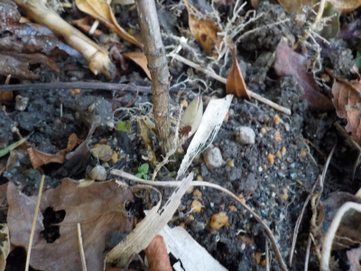
挿し木で増やしたアジサイを地植えにしました。
これで当分手間がいらない。
【古い記事】
【アジサイTOP】
【木TOP】
【園芸TOP】
アジサイは水切れにとっても弱い。猛暑や酷暑を考えるとあまり植えない方がいいかもしれない。
【おいしいものを食べよう。】【たくさん寝よう。】
【ソロ活をしよう!】【季節感のあることをしよう。】【動画視聴はほどほどに。】【当サイトの全てのコンテンツは無断転載禁止です。】